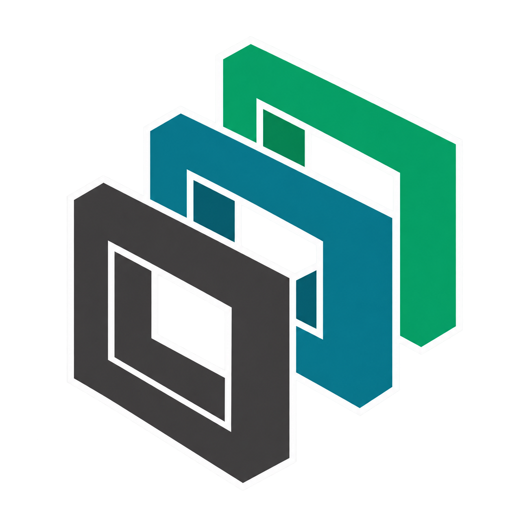
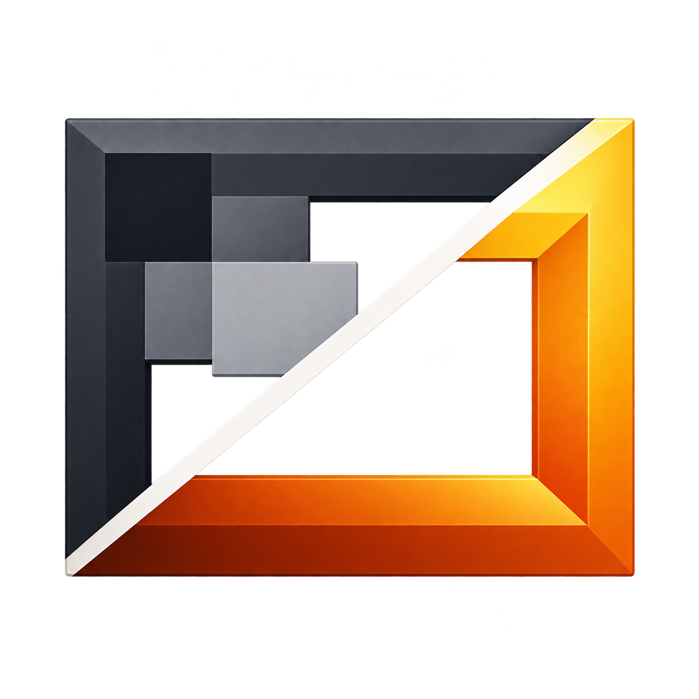
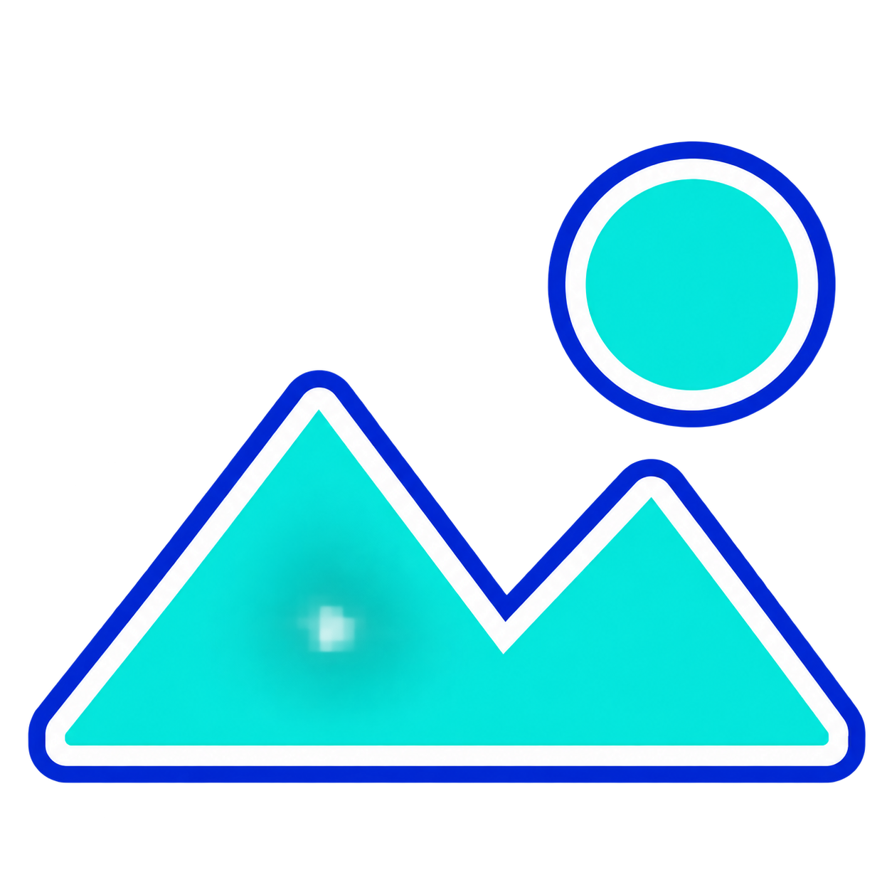

R1 · 前后对比 · 蓝色金属

小尺寸：16px24px32px48px
AI 生成原始 PNG，实际尺寸见说明；目前仅供选型。R 系列为 Renderer，P 系列为 Player。先选编号并提出改动，再定稿。ICO 为同图转换的候选稿，未嵌入程序。



以下是绘制的示意缩略图，用于判断标记遮挡面积；不是 Windows 资源管理器实际集成效果。
视频 V1
图片 I3
I1 / I2 是透明背景异常的试稿，保留原图但不作为候选。全部提示词见 prompts.json。